Moodspace turns a web page into a 3D space you move through. Set your lens once (who's watching, how you feel, what you need) and the same page is presented differently for each person.
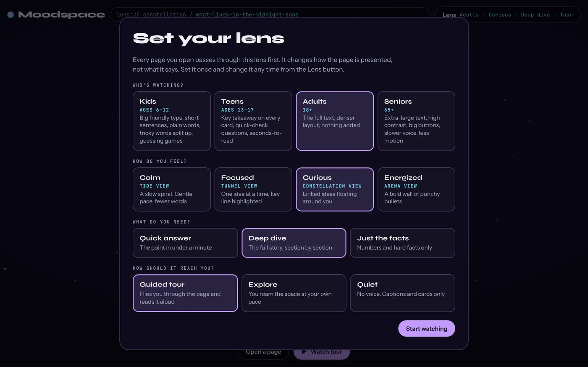
Each screenshot shows the same section of the same page. The words come from the page; the lens changes how they reach you.
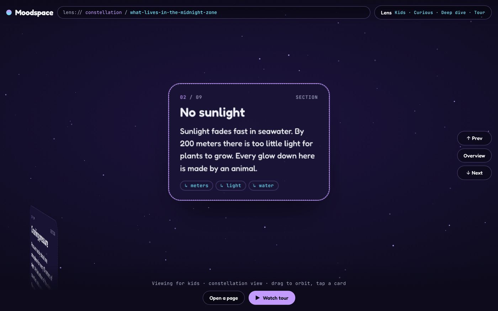
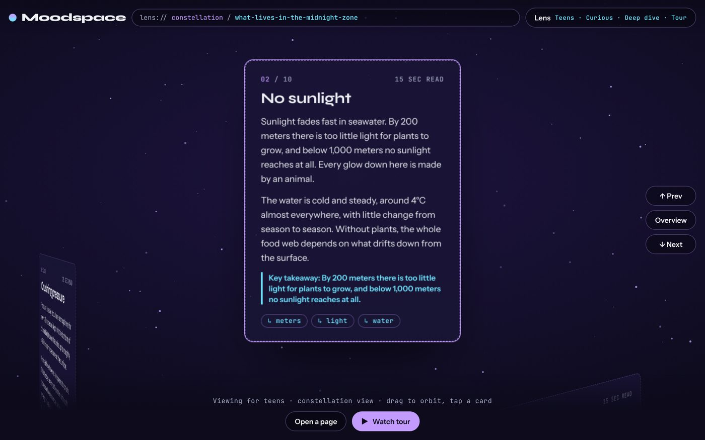
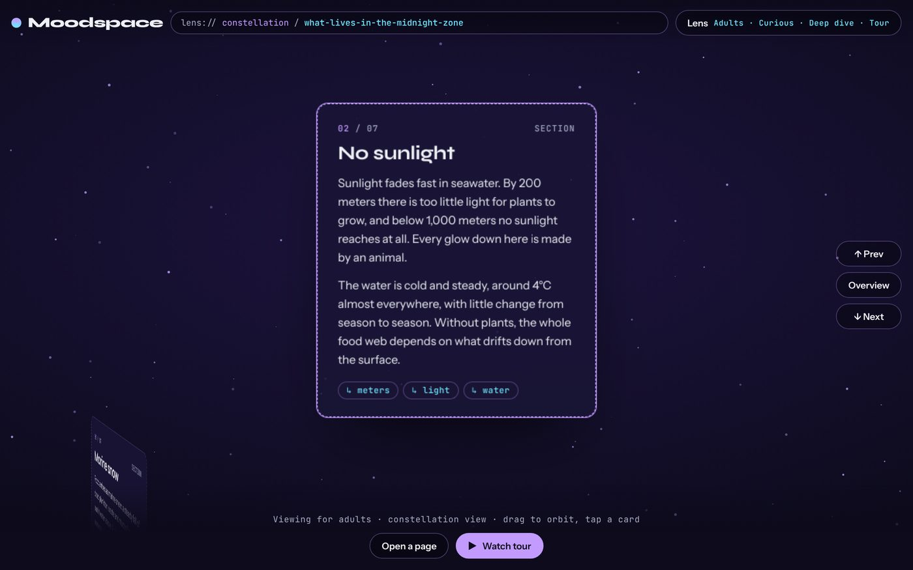
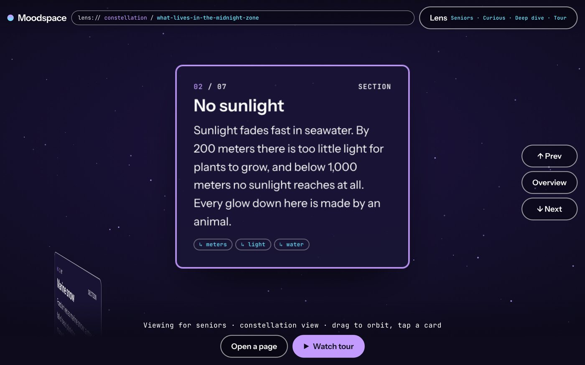
| Kids | Teens | Adults | Seniors | |
|---|---|---|---|---|
| Body text | 19px, rounded | 15–17px | 15px | 23px, high contrast |
| Per card | Up to 3 short sentences | Full text | Full text | Up to 3 sentences |
| Wording | Formal words swapped for plain ones | Original | Original | Original |
| Extras | Tricky words, guessing game | Key takeaway, quick checks, read time | None | Bigger buttons, less motion |
| Tour voice | Slower | Normal | Normal | Slowest |
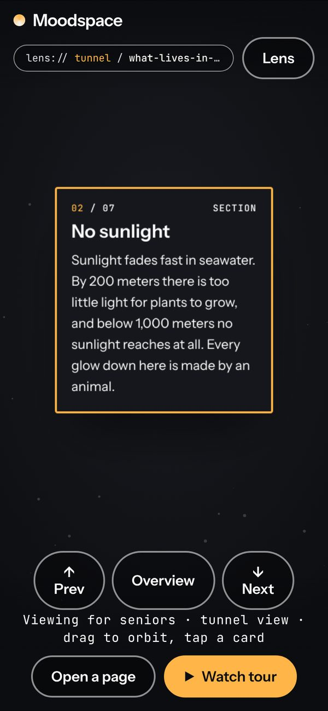
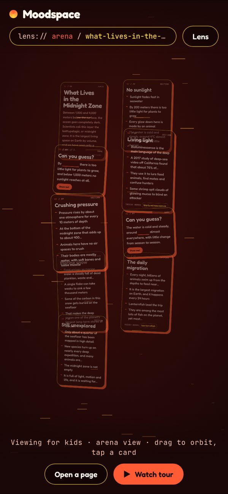
The mood decides the shape of the space, its colors, its motion and how much text each card shows.
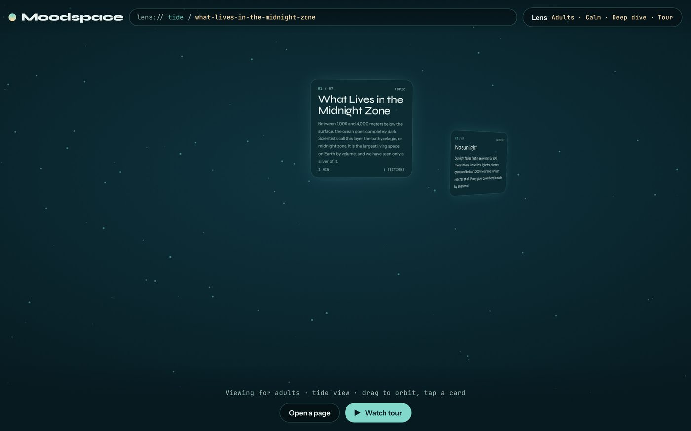
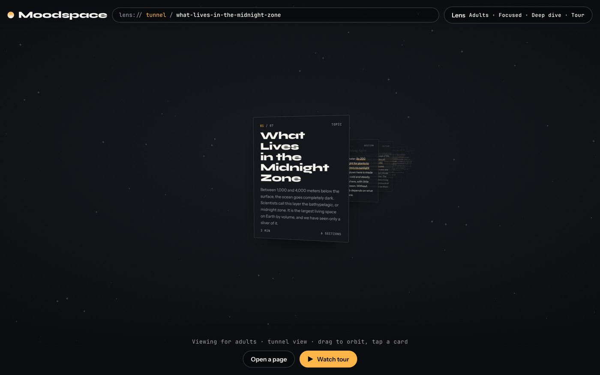
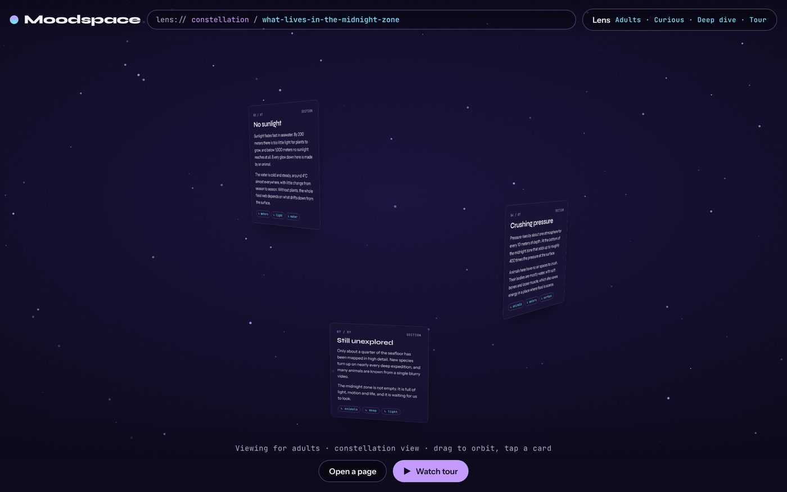
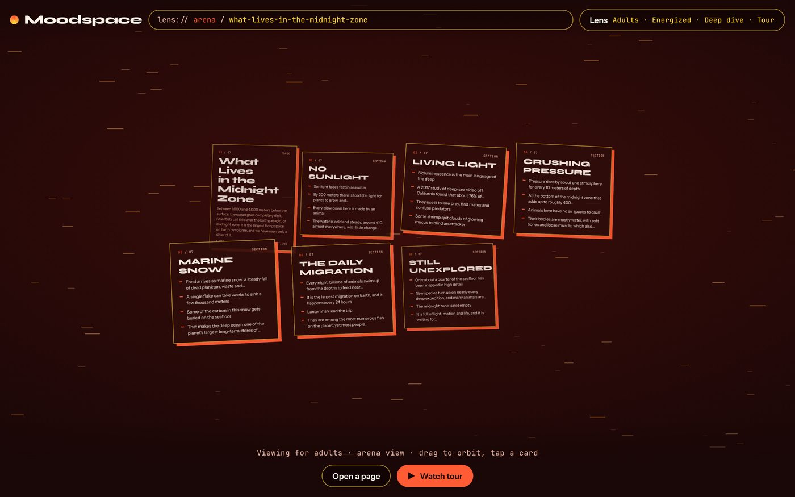
The need sets how much of the page you get. The delivery sets whether you explore or watch.
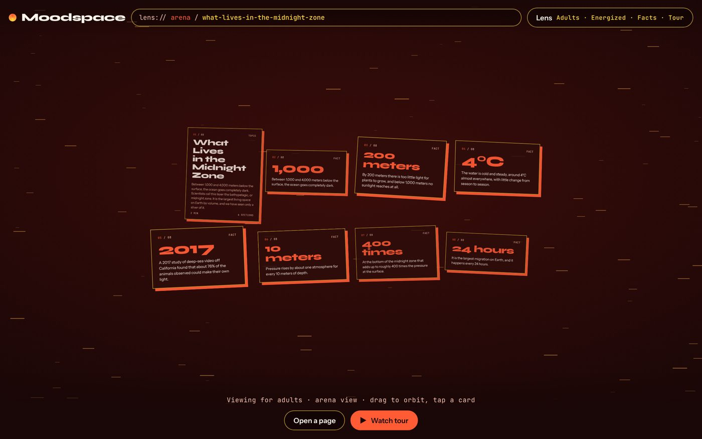
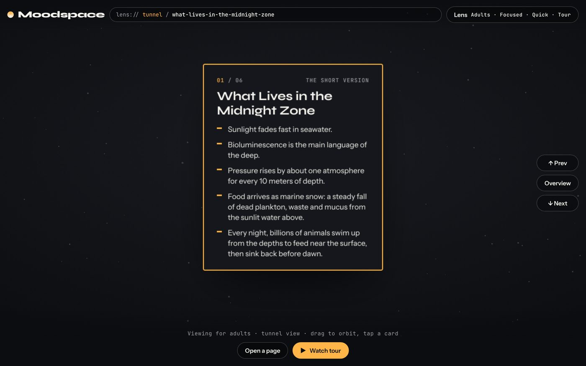
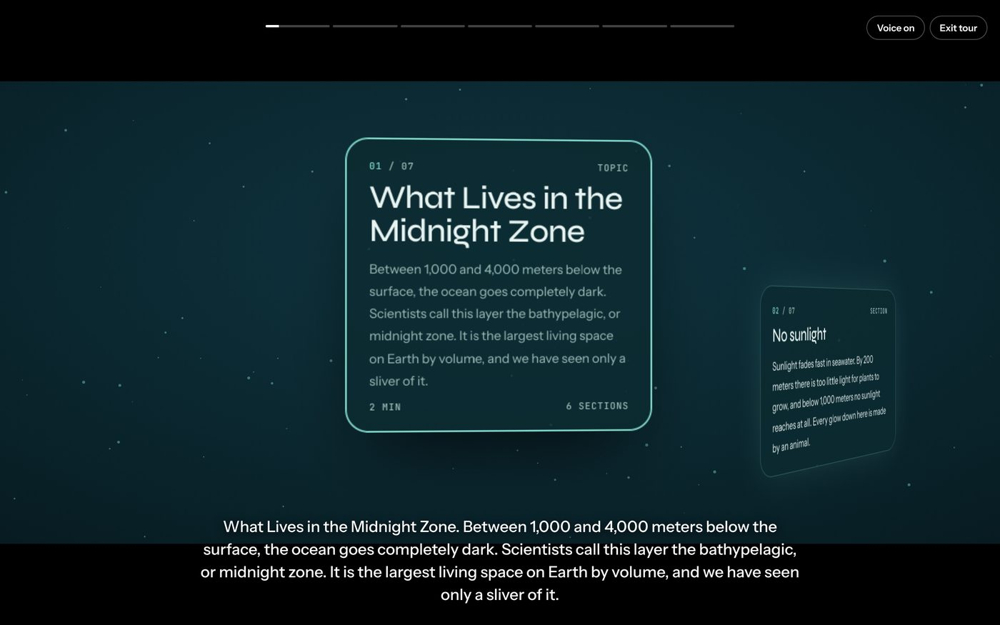
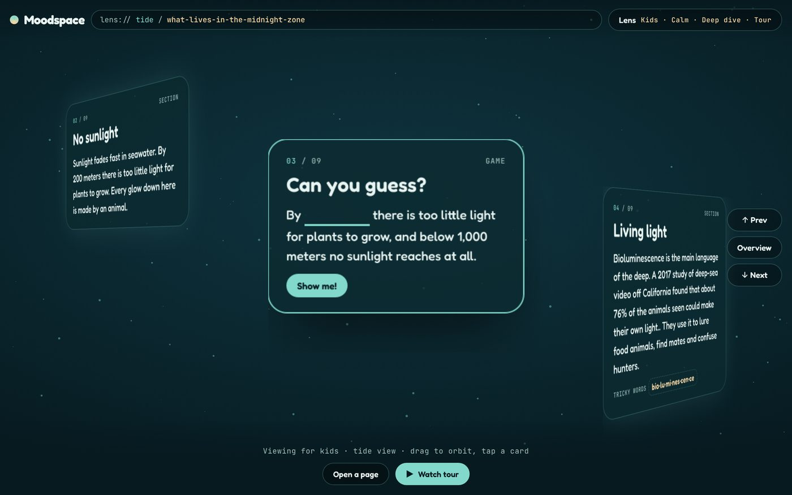